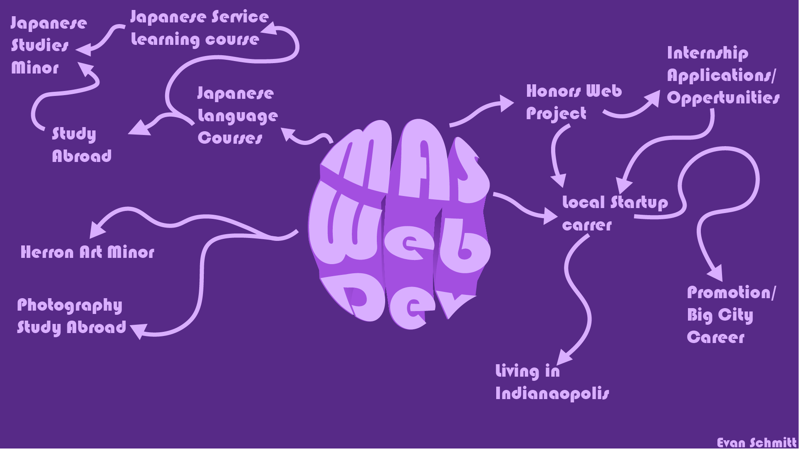
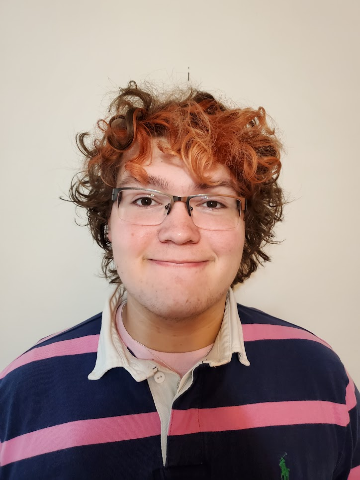
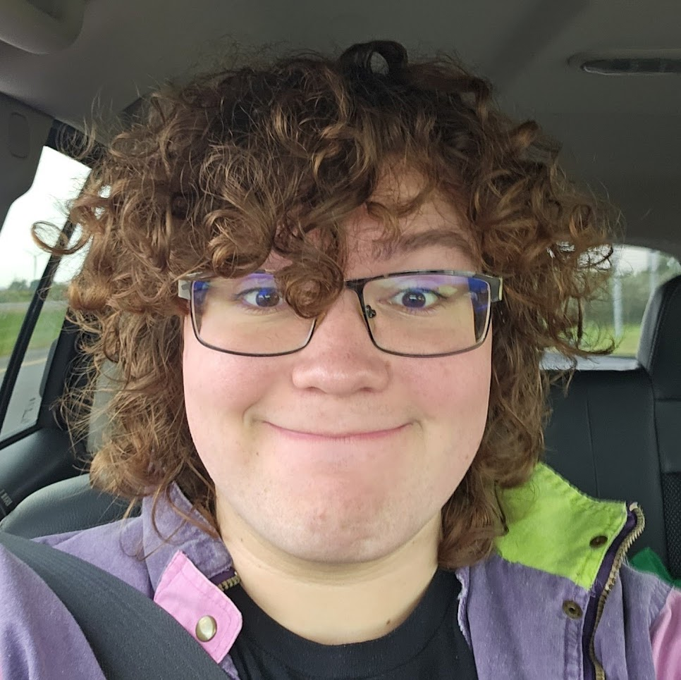

One of the major projects I remember from Honors H200 was the Journey Map.
As a Freshman with walking into IU Indy, I had a lot of ideas about the path
that my life would take. The goal of the Journey Map was to take those
possibilities, and to create different ideas of ways that I could navigate
through college. Only having just discovered that I enjoyed web
development, I was unsure of the oppertunities that I would have access to.
Despite this, these are the ideas that I had had for my IU Indy journey:
Here's the journey I thought I may go on:


18 Year Old Ev, ready to take on college

21 Year Old Ev, surprised at how much I accomplished in college
Obviously, there are multiple paths in that journey map. It would be very hard to get an art minor, Japanese minor, and internship within 4 years. Now, looking back on college, I'm surprised I was able to accomplish as much of my plan as I did.
Here is the path I ended up taking:

Looking back on my 2022 journey map, I am suprised at how much I was able to accomplish during four years at IUI. I was able to get my Japanese Studies minor, and apply to a program to teach English in Japan. Freshman year Ev hadn't even thought about that as a possibility!
It is unfortunate that my photography minor from Herron wasn't prioritized, but I am so happy with the other things that I was able to accomplish. I wasn't sure that I'd land an internship, but I am very glad I ended up at Bluum.